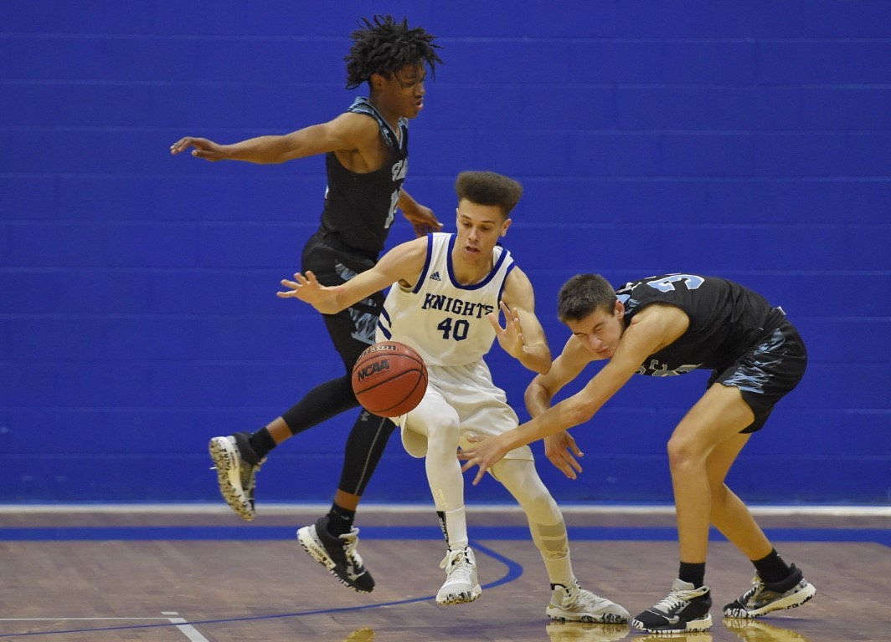
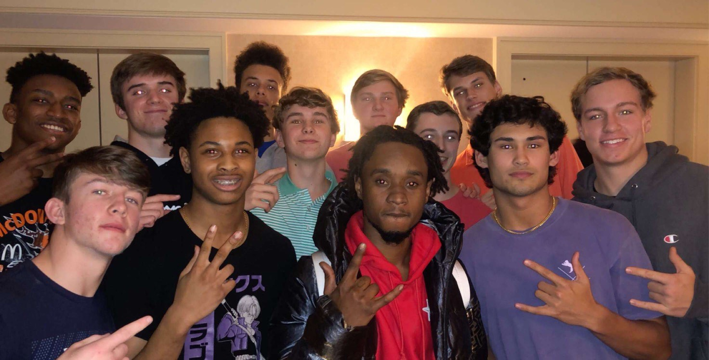

I am not the most out going person around, but I do like to have time to hang out with my friends and play some sports. Basketball is my favorite thing to play, at least when I am not absolutely crammed with school work. I also really love the outdoors and being able to go camping with my dad or just hanging out with him in general. Playing video games on the weekend is something you can usually expect to see from me because to be quite honest, I am very good at it. A lot of the time I usually just keep to myself, I am not one of those people who are known to hangout with a lot of friends in their free time. I just sit back and relax by myself with some good tunes playing, however, I could always count on the boys to bring a good time and I was never against having a good time.

In about five years or so, I see myself probably at the end of my college years and taking part in the field of cyber security. I love working with most forms of technology and I would love to take part in protecting the peoples' vital information and work. In about ten years, however, I see myself continuing with that same field of work in order to make a difference for everyone that is around me.